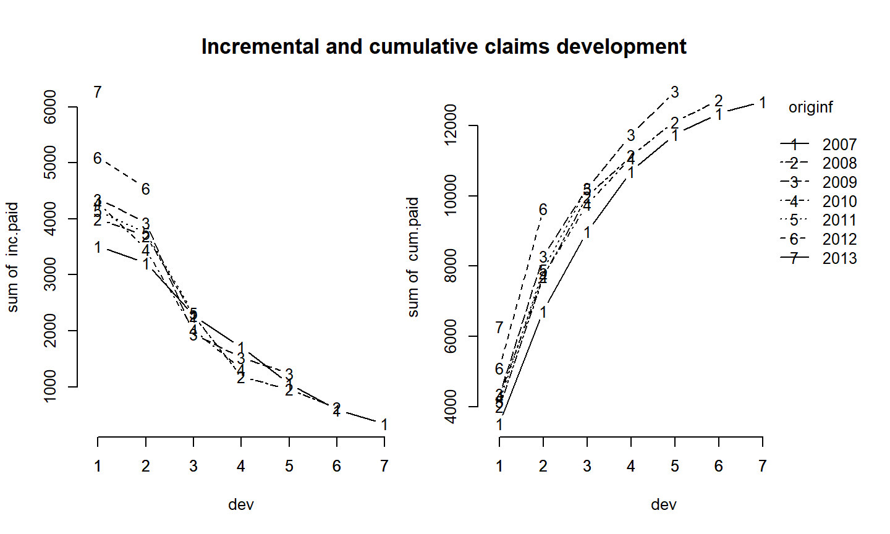

Cálculo de Reservas para Ramo Não-Vida
Triângulos de Desenvolvimento
Métodos determinísticos para cálculo de reserva
- Método Chain-Ladder
16 de março de 2021
Cálculo de Reservas para Ramo Não-Vida
Triângulos de Desenvolvimento
Métodos determinísticos para cálculo de reserva
Uma apólice de seguro é uma promessa feita pela seguradora de pagar ao segurado por futuras perdas em troca de um prêmio recebido antecipadamente.
Por isso, seguradoras não sabem antecipadamente qual será o custo do seu serviço. Para determinar esse custo, precisam confiar na análise de dados históricos para predizer um prêmio sustentável.
Em seguros do Ramo Não-Vida (ex: carro, propriedade, acidente), a maioria das apólices tem duração de 12 meses. No entanto, o processo de pagamento das indenizações pode durar anos. Assim, muitas vezes a data de pagamento também é desconhecida para a seguradora.
Em particular, os processos de indenizações decorrentes de seguros de acidentes podem demorar muito tempo para serem finalizados.
Esse aspecto da operação de seguros faz com que o maior item do passivo da seguradora seja o das Provisões ou Reservas.
As Reservas podem ser quebradas em dois casos:
reservas de sinistros que já foram reportados;
reservas de sinistros já ocorridos mas não reportados (IBNR - Incurred but not reported).
Historicamente, as reservas eram calculadas de maneira determinística na mão, e combinadas com o julgamento de um especialista.
Com o surgimento dos computadores pessoais, tornou-se possível calcular as reservas através de planilhas, de uma maneira mais rápida e eficiente que antes.
Com isso, os atuários puderam considerar diferentes cenários e analisar a sensibilidade e os efeitos das previsões.
E à medida que a capacidade dos computadores foi aumentando, modelos mais sofisticados para as reservas passaram a ser considerados.
Algumas mudanças em legislações e regulamentos, como a diretiva Solvency II da União Européia em 2009, passaram a promover também métodos estatísticos e estocásticos para o cálculo de reservas.
Vários métodos vem sendo desenvolvidos para estimar tanto o valor como a variabilidade de reservas. Vamos ver alguns desses métodos.
Dados históricos de seguros normalmente são apresentados em forma de triângulos, mostrando o desenvolvimento (tempo até o pagamento) de indenizações de acordo com o período de origem do seguro.
O período de origem do seguro pode ser tanto com relação à emissão da apólice, quanto em relação ao período de ocorrência do sinistro.
O período de desenvolvimento de um seguro também pode ser chamado de duração, ou tempo até o pagamento.
O triângulo pode ser feito para períodos anuais, mensais, semestrais…
Vamos considerar os dados de um triângulo de desenvolvimento para indenizações de um seguro automobilístico contra terceiros de uma seguradora no Reino Unido.
Os períodos de origem estão entre 2007 e 2013.
Os dados estão organizados em uma tabela com os períodos de origem na primeira coluna, os períodos de desenvolvimento na segunda coluna, e os pagamentos/transações na terceira coluna.
## originf dev inc.paid ## 1 2007 1 3511 ## 2 2007 2 3215 ## 3 2007 3 2266 ## 4 2007 4 1712 ## 5 2007 5 1059 ## 6 2007 6 587 ## 7 2007 7 340 ## 8 2008 1 4001 ## 9 2008 2 3702 ## 10 2008 3 2278 ## 11 2008 4 1180 ## 12 2008 5 956 ## 13 2008 6 629 ## 14 2009 1 4355 ## 15 2009 2 3932 ## 16 2009 3 1946 ## 17 2009 4 1522 ## 18 2009 5 1238 ## 19 2010 1 4295 ## 20 2010 2 3455 ## 21 2010 3 2023 ## 22 2010 4 1320 ## 23 2011 1 4150 ## 24 2011 2 3747 ## 25 2011 3 2320 ## 26 2012 1 5102 ## 27 2012 2 4548 ## 28 2013 1 6283
## transformando em triângulo de desenvolvimento
(inc.triangle <- with(Claims, {
M <- matrix(nrow=n, ncol=n,
dimnames=list(origin=levels(originf), dev=1:n))
M[cbind(originf, dev)] <- inc.paid
M
}))
## dev ## origin 1 2 3 4 5 6 7 ## 2007 3511 3215 2266 1712 1059 587 340 ## 2008 4001 3702 2278 1180 956 629 NA ## 2009 4355 3932 1946 1522 1238 NA NA ## 2010 4295 3455 2023 1320 NA NA NA ## 2011 4150 3747 2320 NA NA NA NA ## 2012 5102 4548 NA NA NA NA NA ## 2013 6283 NA NA NA NA NA NA
Objetivo: estimar o desenvolvimento futuro das indenizações para formar uma reserva.
Eventualmente, todas as indenizações serão quitadas, mas nem sempre é fácil estimar quando tempo isso irá levar.
Vamos falar de seguros de cauda leve ou pesada dependendo de quanto tempo leva até que todos os pagamentos sejam feitos.
## triângulo acumulado (cum.triangle <- t(apply(inc.triangle, 1, cumsum)))
## dev ## origin 1 2 3 4 5 6 7 ## 2007 3511 6726 8992 10704 11763 12350 12690 ## 2008 4001 7703 9981 11161 12117 12746 NA ## 2009 4355 8287 10233 11755 12993 NA NA ## 2010 4295 7750 9773 11093 NA NA NA ## 2011 4150 7897 10217 NA NA NA NA ## 2012 5102 9650 NA NA NA NA NA ## 2013 6283 NA NA NA NA NA NA
## diagonal - pagamentos acumulados de cada período de origem (latest.paid <- cum.triangle[row(cum.triangle) == n - col(cum.triangle) + 1])
## [1] 6283 9650 10217 11093 12993 12746 12690
## pagamentos acumulados Claims$cum.paid <- cum.triangle[with(Claims, cbind(originf, dev))] head(Claims)
## originf dev inc.paid cum.paid ## 1 2007 1 3511 3511 ## 2 2007 2 3215 6726 ## 3 2007 3 2266 8992 ## 4 2007 4 1712 10704 ## 5 2007 5 1059 11763 ## 6 2007 6 587 12350

De acordo com os gráficos, parece que não há nenhum comportamento anormal nos dados.
Os últimos anos (2012 e 2013) parecem ter pagamentos um pouco maiores do que os demais anos, enquanto 2007 parece ter os menores valores.
O último pagamento de 2009 (de 1.238) se destaca um pouco também do comportamento geral.
O modelo mais estabelecido e mais antigo para estimar reservas é o Chain-Ladder.
O modelo Chain-Ladder clássico é um algoritmo determinístico para prever as indenizações baseado nos dados históricos.
Ele assume que o desenvolvimento proporcional de um período para o outro é o mesmo para todos os períodos de origem.
Seja \(C_{i,j}\) os pagamentos acumulados para período de origem \(i\) e após um período de desenvolvimento \(j\).
1º passo: Calcular os fatores de desenvolvimento \(f_k\) entre os períodos de desenvolvimento:
\[f_k = \frac{\sum_{i=1}^{n-k} C_{i,k+1}}{\sum_{i=1}^{n-k} C_{i,k}}\]
## fatores de desenvolvimento
f <- sapply( (n-1):1, function(i) {
sum(cum.triangle[1:i, n-i+1])/sum(cum.triangle[1:i, n-i]) } )
tail <- 1 # último fator de desenvolvimento (f <- c(f, tail))
## [1] 1.889234 1.282381 1.147105 1.096758 1.050921 1.027530 1.000000
\[\hat{C}_{i,k+1} = f_k \cdot \hat{C}_{i,k} \]
começando por \(\hat{C}_{i, n-i+1} = C_{i,n-i+1}\)
## completando o triângulo
full.triangle <- cum.triangle
for(k in 1:(n-1)){
full.triangle[(n-k+1):n, k+1] <- full.triangle[(n-k+1):n,k]*f[k]
}
full.triangle
## dev ## origin 1 2 3 4 5 6 7 ## 2007 3511 6726.00 8992.00 10704.00 11763.00 12350.00 12690.00 ## 2008 4001 7703.00 9981.00 11161.00 12117.00 12746.00 13096.90 ## 2009 4355 8287.00 10233.00 11755.00 12993.00 13654.62 14030.54 ## 2010 4295 7750.00 9773.00 11093.00 12166.34 12785.86 13137.86 ## 2011 4150 7897.00 10217.00 11719.97 12853.97 13508.51 13880.40 ## 2012 5102 9650.00 12374.98 14195.40 15568.92 16361.71 16812.15 ## 2013 6283 11870.06 15221.94 17461.17 19150.67 20125.85 20679.92
## total de pagamentos previstos (ultimate.paid <- full.triangle[,n])
## 2007 2008 2009 2010 2011 2012 2013 ## 12690.00 13096.90 14030.54 13137.86 13880.40 16812.15 20679.92
## fatores de desenvolvimento totais (ldf <- rev(cumprod(rev(f))))
## [1] 3.291408 1.742192 1.358560 1.184338 1.079854 1.027530 1.000000
## proporção de indenizações estimadas (dev.pattern <- 1/ldf)
## [1] 0.3038213 0.5739896 0.7360737 0.8443537 0.9260515 0.9732072 1.0000000
## reserva (reserve <- sum (latest.paid * (ldf - 1)))
## [1] 28655.77
sum(ultimate.paid - latest.paid)
## [1] 28655.77